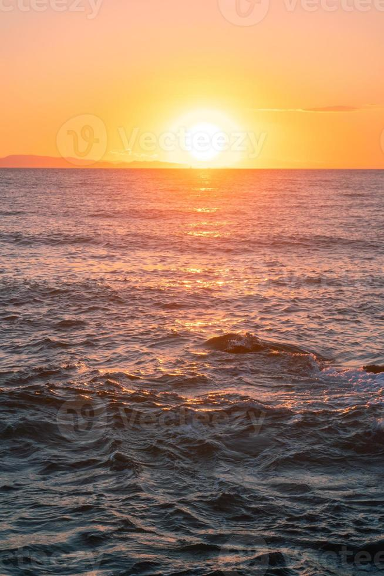

🌊 ¿Qué es El Niño y el Super Niño?
Comprender el océano para entender el clima

🌍 ¿Cómo funciona normalmente?
El océano Pacífico es el más grande del mundo y tiene mucha influencia sobre el clima. En condiciones normales, los vientos soplan desde América hacia Asia. Estos vientos empujan el agua caliente del mar hacia el oeste. Como el agua caliente se va para allá, el agua más fría del fondo sube por la costa de América del Sur.
El agua caliente que se acumula cerca de Asia y Australia provoca mucha lluvia en esas zonas. Mientras tanto, en la costa de América del Sur, el agua fría trae nutrientes del fondo, lo que alimenta a los peces y mantiene un clima más seco.
🔥 ¿Qué pasa cuando llega El Niño?
De vez en cuando, los vientos se debilitan. Ya no empujan con la misma fuerza el agua caliente hacia Asia. Entonces, el agua caliente regresa hacia América. Cuando eso pasa, todo cambia:
- El agua del mar se calienta más de lo normal frente a las costas de Perú y Ecuador
- Las lluvias que deberían caer en Asia se desplazan hacia América
- Las zonas que suelen ser húmedas pueden volverse secas, y las secas pueden volverse muy lluviosas
- Las temperaturas suben en gran parte del planeta
Este fenómeno recibe el nombre de "El Niño" porque los pescadores lo notaban cerca de la Navidad, y le pusieron ese nombre cariñoso al Niño Jesús.
⚡ ¿Y qué es el Super Niño?
El Super Niño no es un fenómeno distinto, sino una versión más fuerte e intensa de El Niño. Se llama así cuando el calentamiento del océano es mucho mayor de lo habitual y sus efectos se sienten con más fuerza en todo el mundo.
En un Super Niño se cumplen estas cosas:
- El agua del mar se calienta mucho más de lo normal
- Los cambios en el clima son más fuertes y duran más tiempo
- Las sequías son más prolongadas y las lluvias más intensas donde ocurren
- Los efectos se notan en más países, incluso en zonas que normalmente no sufren tanto
Los Super Niños más fuertes que se han registrado ocurrieron en los años 1997-1998, 2015-2016 y ahora se habla de uno nuevo que podría afectarnos. Por eso es importante estar informados y preparados.
📈 ¿Cómo se detecta?
Científicos de muchos países vigilan el mar todo el tiempo. Miden la temperatura del agua, la dirección de los vientos y la humedad del aire. Cuando ven que el agua se calienta más de lo normal durante varios meses, avisan que El Niño ha llegado. Si el calentamiento es muy grande, anuncian que se trata de un evento fuerte o "Super Niño".
Estas alertas nos dan tiempo para prepararnos: ahorrar agua, cuidar los cultivos, proteger los bosques y organizarnos entre todos.
🔮 ¿Por qué nos afecta tanto?
Colombia está en una zona donde convergen muchos climas. Tenemos el mar Caribe, el Pacífico, los Andes y la Amazonía. Cuando El Niño cambia los vientos y las lluvias en el mundo, nosotros lo sentimos con fuerza:
- Disminuyen las lluvias en gran parte del país
- Los ríos bajan de nivel y los embalses se llenan menos
- Aumenta el riesgo de incendios en los bosques y páramos
- Las temperaturas suben, especialmente en las zonas bajas
- La producción de alimentos puede verse afectada
No podemos impedir que ocurra, pero sí podemos prepararnos. Conocerlo es el primer paso.